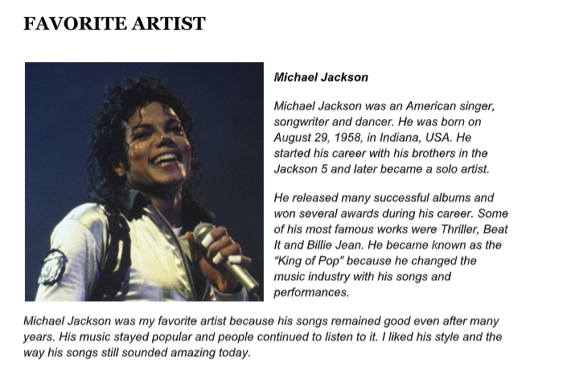

1º Trimestre
Paixão segundo GH

Descrição: Produção de uma apresentação em slides sobre a obra "A Paixão Segundo G.H.", de Clarice Lispector, com análise de seus principais temas e características.
Habilidades desenvolvidas:
H4: Analisar elementos de textos literários.
H22: Interpretar obras considerando contexto e linguagem.
Parnasianismo

Descrição: Desenvolvimento de um jogo interativo inspirado no movimento literário do Parnasianismo, com foco em suas características e autores.
Habilidades desenvolvidas:
H4: Analisar características de textos literários.
H14: Compreender movimentos literários e seus contextos.
2º Trimestre
Inglês

Descrição: Docs feito falando sobre o ARTISTA e FILME favorito em INGLÊS.
H25 - Interpretar textos em Língua Estrangeira Moderna (Inglês).